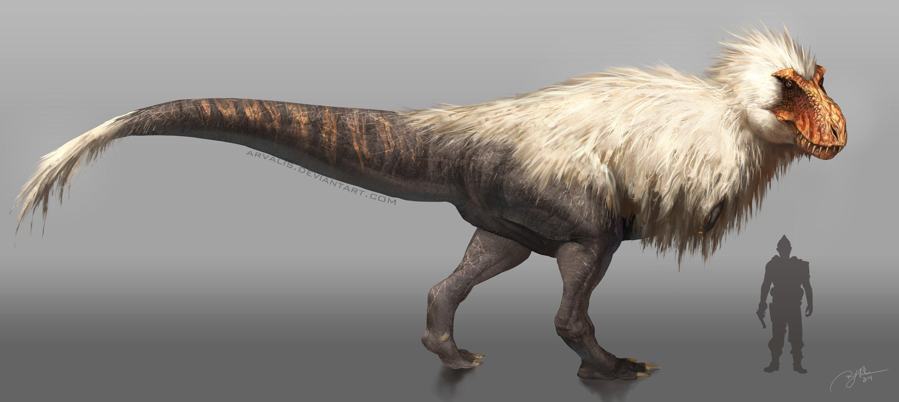
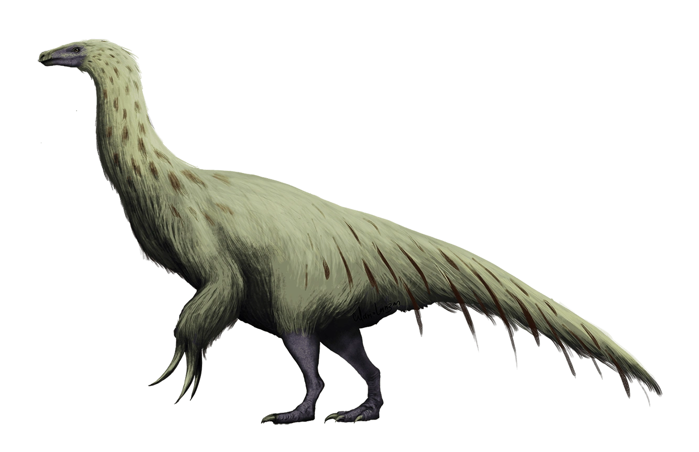
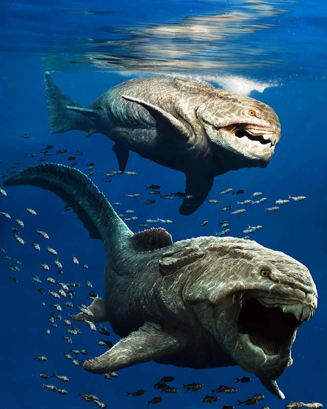

Tyrannosaurus é um gênero de grandes dinossauros terópodes.
A espécie-tipo do gênero é Tyrannosaurus rex, que ganhou o epíteto específico de rex,
por ser o maior dinossauro carnívoro conhecido quando foi descoberto.
Viveu na região onde hoje é a América do Norte, no antigo continente insular de Laramidia.
Já que os nerds que estudam essas criaturas extintas não
se decidem se eles tinham penas ou não, eu coloquei a imagem onde ele tem, porque é meu favorito,
imaginar esse gigante com penas como uma galinha me deixa mais feliz!

Therizinosaurus (do latim "lagarto foice" ou "lagarto ceifador")
foi um gênero de dinossauro herbívoro que viveu no fim do período Cretáceo.
Media de 7 a 12 metros de comprimento, 4 ou 5 metros de altura e pesava em torno
de 4 toneladas. Este foi, com certeza, um dos dinossauros mais exóticos que já existiram.
Além dos braços enormes, cada um com 1,9 metros, possuía as maiores
garras já encontradas no planeta, com 80 cm cada.

O Dunkleosteus terrelli foi um peixe placodermo pré-histórico que viveu no Devónico,
há mais de 360 milhões de anos. Tinha a cabeça e o tórax coberto com placas duras
parecidas com uma blindagem que chegavam a 5 cm de espessura, do restante do corpo (cauda)
não existem fósseis, sendo que nas reconstituições essa parte é
baseada na de outros placodermos. Media cerca de 6 metros de comprimento
(embora alguns paleontólogos acreditem que o animal poderia chegar aos 9 metros)
e mais de 04 toneladas de peso. Ele teoricamente podia fechar a
mandíbula a uma grande velocidade a 250 kl de peso da mordida do animal.
Muito mais legal que o Megalodon!